10 Elements
This chapter is the first mixed migration chapter in the Quarto pilot. It combines:
- legacy OPAL element semantics ported from the Asciidoctor manual
- OPALX-native analytic element descriptions already written directly in Quarto
10.1 Element Input Format
All physical elements are defined by statements of the form
label:keyword, attribute,..., attributewhere:
label-
is the name given to the element, for example
QF. It is an identifier. keyword-
is an element-type keyword, for example
QUADRUPOLE. attribute- usually has the form
attribute-name=attribute-valueOmitted attributes are assigned a default value, normally zero.
Example:
QF: QUADRUPOLE, L=1.8, K1=0.015832;10.2 Common Attributes for All Elements
The following attributes are shared by all elements.
| Attribute | Meaning |
|---|---|
TYPE |
Engineering type string used for element selection. |
APERTURE |
Aperture specification such as SQUARE(a,f), RECTANGLE(a,b,f), CIRCLE(d,f), or ELLIPSE(a,b,f). |
L |
Physical element length. |
ELEMEDGE |
Position of the physical start of the element in s. |
X, Y, Z |
Absolute position components when absolute placement is used. |
THETA, PHI, PSI |
Orientation angles relative to the first beamline using absolute positioning. |
DX, DY, DZ |
Position errors that do not affect the design trajectory. |
DTHETA, DPHI, DPSI |
Rotation errors that do not affect the design trajectory. |
WAKEF |
Attach a wakefield defined by the WAKE command. |
PARTICLEMATTERINTERACTION |
Attach a particle-matter interaction handler. |
OUTFN |
Base file name for element-generated output. |
DELETEONTRANSVERSEEXIT |
Control whether particles exiting on the transverse sides are deleted in OPAL-T. |
Dipoles are a special case because GAP and HGAP define their aperture instead of the generic APERTURE attribute.
10.3 Drift Spaces
label: DRIFT, TYPE=string, APERTURE=string, L=real;A DRIFT space has no additional attributes.
Examples:
DR1: DRIFT, L=1.5;
DR2: DRIFT, L=DR1->L, TYPE=DRF;The length of DR2 will always be equal to the length of DR1. The reference system for a drift space is a Cartesian coordinate system.
10.4 Quadrupole
label: QUADRUPOLE, TYPE=string, APERTURE=real-vector,
L=real, K1=real, K1S=real;A QUADRUPOLE is a straight Cartesian magnet with normal and skew quadrupole components.
K1-
normal quadrupole gradient \(K_1 = \partial B_y / \partial x\) in \(\mathrm{Tm^{-1}}\). Positive
K1means horizontal focusing for positively charged particles moving in the positive design direction. K1S- skew quadrupole component \(K_{1s} = - \partial B_x / \partial x\) in \(\mathrm{Tm^{-1}}\).
DK1,DK1S- normalized strength errors for the normal and skew component.
Example:
QP1: QUADRUPOLE, L=1.20, ELEMEDGE=-0.5265, K1=0.11;10.5 Sextupole
label: SEXTUPOLE, TYPE=string, APERTURE=real-vector,
L=real, K2=real, K2S=real;A SEXTUPOLE is a straight Cartesian element with second-order normal and skew components.
K2- normal sextupole strength \(K_2 = \partial^2 B_y / \partial x^2\) in \(\mathrm{Tm^{-2}}\).
K2S- skew sextupole strength \(K_{2s} = - \partial^2 B_x / \partial x^2\) in \(\mathrm{Tm^{-2}}\).
DK2,DK2S- normalized strength errors.
Example:
S1: SEXTUPOLE, L=0.4, K2=0.00134;10.6 Octupole
label: OCTUPOLE, TYPE=string, APERTURE=real-vector,
L=real, K3=real, K3S=real;K3- normal octupole strength \(K_3 = \partial^3 B_y / \partial x^3\) in \(\mathrm{Tm^{-3}}\).
K3S- skew octupole strength \(K_{3s} = - \partial^3 B_x / \partial x^3\) in \(\mathrm{Tm^{-3}}\).
DK3,DK3S- normalized strength errors.
Example:
O3: OCTUPOLE, L=0.3, K3=0.543;10.7 General Multipole
The legacy MULTIPOLE element defines a thick straight multipole of arbitrary order.
label: MULTIPOLE, TYPE=string, APERTURE=real-vector,
L=real, KN=real-vector, KS=real-vector;KN- array of normal coefficients \(K_n = \partial^n B_y / \partial x^n\).
KS- array of skew coefficients \(K_{ns} = - \partial^n B_x / \partial x^n\).
DKN,DKS- normalized strength-error arrays for the normal and skew coefficients.
If L != 0, the strengths are interpreted per unit length. If L == 0, they are integrated strengths. The multipole order of coefficient n corresponds to 2n+2 poles. Superposition of several orders is allowed.
Example:
M27: MULTIPOLE, L=1.0, ELEMEDGE=3.8, KN={0.0, 0.11};10.8 General Multipole With Fringe Field Model
MULTIPOLET is the extended cyclotron-side multipole element with explicit fringe fields. It can represent either a straight magnet or a curved magnet with a prescribed bend angle.
label: MULTIPOLET, L=real, TP=real-vector,
LFRINGE=real, RFRINGE=real,
VAPERT=real, HAPERT=real,
MAXFORDER=real, ROTATION=real,
EANGLE=real, BBLENGTH=real, ANGLE=real,
MAXXORDER=real, VARRADIUS=bool,
ENTRYOFFSET=real, SCALING_MODEL=string;The most important attributes are:
TP- transverse mid-plane polynomial coefficients \(T(x) = B_0 + B_1 x + B_2 x^2 + \dots\).
LFRINGE,RFRINGE- left and right fringe-field lengths.
ANGLE- physical bend angle of the magnet.
VARRADIUS-
when
TRUE, the bend radius can vary so that the reference path remains in the magnet center. This is a cyclotron-side restricted feature. ROTATION- roll of a straight magnet about its central axis to obtain skew fields.
SCALING_MODEL- optional time-dependent scaling model for the multipole coefficients.
This element uses a fringe-field model based on a scalar-potential expansion with a mid-plane profile multiplied by a longitudinal fringe function.
Example:
M30: MULTIPOLET, L=1, RFRINGE=0.3, LFRINGE=0.2,
ANGLE=PI/6, TP={2.0, 0.1}, VARRADIUS=TRUE, BBLENGTH=2;10.9 Laser
label: LASER, L=real, ELEMEDGE=real,
WAVELENGTH=real, PULSEENERGY=real, PULSELENGTH=real,
WAISTX=real, WAISTY=real, DIR=real-vector, STOKES=real-vector;The LASER element defines a passive analytic laser pulse for OPALX. At the current stage it is an input object with validated pulse parameters and lattice placement, but it does not yet apply laser-particle interaction physics by itself.
The required attributes are:
WAVELENGTH-
Laser wavelength in
m. Must be greater than zero. PULSEENERGY-
Total pulse energy in
J. Must be greater than zero. PULSELENGTH-
Pulse duration in
s. Must be greater than zero. WAISTX,WAISTY-
Horizontal and vertical waist in
m. Must be greater than zero. DIR- Propagation direction as a 3-component vector. OPALX normalizes it internally.
STOKES-
Optional normalized Stokes vector
{xi1, xi2, xi3}. If omitted,{0,0,0}is used.
Example:
LASL: LASER,
WAVELENGTH = 1.03e-6,
PULSEENERGY = 1.0,
PULSELENGTH = 2.0e-12,
WAISTX = 5.0e-6,
WAISTY = 5.0e-6,
DIR = {0, 0, -1},
STOKES = {0, 0, 1};10.10 Solenoid
label: SOLENOID, TYPE=string, APERTURE=real-vector,
L=real, KS=real;A SOLENOID has one principal strength attribute:
KS-
the solenoid strength \(K_s = \frac{\partial B_s}{\partial s}\), in \(\mathrm{Tm^{-1}}\). For positive
KSand positive particle charge, the solenoid field points in the direction of increasings.
The reference system for a solenoid is a Cartesian coordinate system.
In OPAL-T mode, field maps are specified through:
FMAPFN- file name of the field map.
Example:
SP1: SOLENOID, L=1.20, ELEMEDGE=-0.5265, KS=0.11,
FMAPFN="1T1.T7";10.11 RF Cavities
An RFCAVITY is the legacy standing-wave cavity element used in both beamline and cyclotron workflows. The common syntax is:
label: RFCAVITY, APERTURE=real-vector, L=real,
VOLT=real, LAG=real;L-
cavity length in
m. VOLT-
peak RF voltage in
MV. The cavity kick is parameterized as \(\delta E = \mathrm{VOLT}\cdot\sin(2\pi(\mathrm{LAG}-\mathrm{HARMON}\cdot f_0 t))\). LAG-
phase lag in
rad. In OPAL-T this is generally measured relative to the phase that maximizes the reference-particle energy gain. That phase is found by the auto-phasing algorithm unless the cavity is vetoed. DLAG-
phase-lag error in
rad.
10.11.1 OPAL-T mode
Additional OPAL-T attributes are:
FMAPFN-
field-map file in
T7format. TYPE-
cavity type, either
STANDING(default) orSINGLEGAP. FREQ-
cavity frequency in
MHz. If both the cavity card and the field map define a frequency, OPAL-T warns on mismatch and uses the card value. APVETO-
if
TRUE, the cavity is excluded from auto-phasing and the phase equalsLAGat the arrival time of the reference particle at the field boundary.
Example standing-wave cavity that mimics a DC gun:
gun: RFCAVITY, L=0.018, VOLT=-131/(1.052*2.658),
FMAPFN="1T3.T7", ELEMEDGE=0.00,
TYPE=STANDING, FREQ=1.0e-6;Example two-frequency standing-wave system:
rf1: RFCAVITY, L=0.54, VOLT=19.961, LAG=193.0/360.0,
FMAPFN="1T3.T7", ELEMEDGE=0.129, TYPE=STANDING,
FREQ=1498.956;
rf2: RFCAVITY, L=0.54, VOLT=6.250, LAG=136.0/360.0,
FMAPFN="1T4.T7", ELEMEDGE=0.129, TYPE=STANDING,
FREQ=4497.536;10.11.2 OPAL-cycl mode
Cyclotron-side RFCAVITY describes a single-gap cavity sampled from a normalized radial voltage profile. The additional parameters are:
FMAPFN- ASCII file that stores the normalized voltage-amplitude curve of the cavity gap.
TYPE-
in cyclotron usage this is typically
SINGLEGAP. FREQ-
RF frequency in
MHz. RMIN,RMAX-
inner and outer cavity radius in
mm. ANGLE-
azimuthal cavity location in the global frame in
deg. PDIS-
perpendicular distance of the cavity from the cyclotron center in
mm. GAPWIDTH-
cavity gap width in
mm. PHI0-
initial phase in
deg.
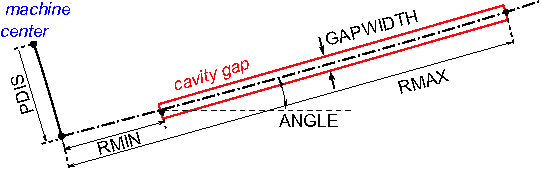
Example:
rf0: RFCAVITY, VOLT=0.25796, FMAPFN="Cav1.dat",
TYPE=SINGLEGAP, FREQ=50.637, RMIN=350.0,
RMAX=3350.0, ANGLE=35.0, PDIS=0.0,
GAPWIDTH=0.0, PHI0=phi01;10.12 Traveling Wave Structure
A TRAVELINGWAVE structure is an OPAL-T element reconstructed from a one-dimensional standing-wave field map and a repeated-cell model.
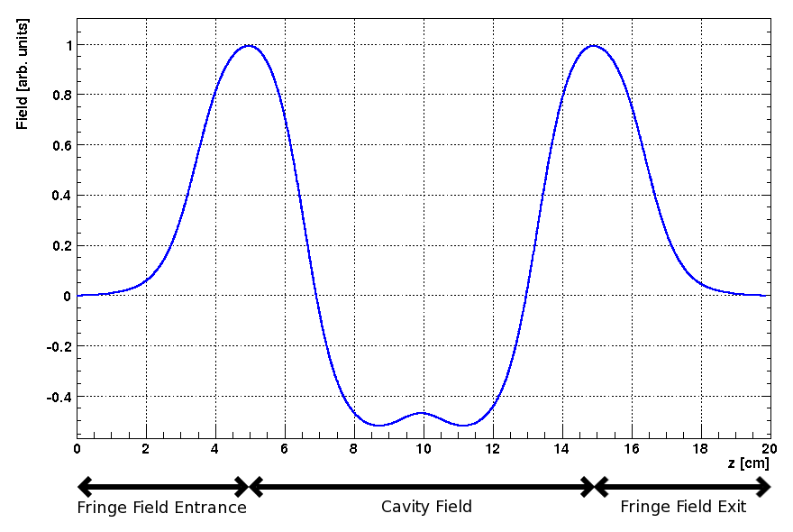
TRAVELINGWAVE structure. The field of a single cavity is shown between its entrance and exit fringe fields.
An example of a 1D traveling-wave field map is shown in Figure 10.2. The map itself is a standing-wave solution for a single accelerating cavity. OPAL-T reconstructs the full traveling-wave tank in three parts:
- entrance fringe field,
- repeated accelerating-cell region,
- exit fringe field.
10.12.1 Fringe fields
The entrance and exit fringe fields are treated as standing-wave regions: \[
\begin{aligned}
\mathbf{E}_{\mathrm{entrance}}(\mathbf{r},t) &= \mathbf{E}_{\mathrm{from\,map}}(\mathbf{r})\,\mathrm{VOLT}\,
\cos\!\bigl(2\pi\,\mathrm{FREQ}\,t + \phi_{\mathrm{entrance}}\bigr), \\\\
\mathbf{E}_{\mathrm{exit}}(\mathbf{r},t) &= \mathbf{E}_{\mathrm{from\,map}}(\mathbf{r})\,\mathrm{VOLT}\,
\cos\!\bigl(2\pi\,\mathrm{FREQ}\,t + \phi_{\mathrm{exit}}\bigr).
\end{aligned}
\] Here VOLT and FREQ are the element amplitude and frequency, the entrance phase is \phi_{entrance} = \mathrm{LAG}, and the exit phase is determined internally from LAG and NUMCELLS.
10.12.2 Reconstructed body field
The field of the accelerating structure body is reconstructed from the central part of the standing-wave map by superposition: \[
\begin{aligned}
\mathbf{E}(\mathbf{r},t) = \frac{\mathrm{VOLT}}{\sin(2\pi\,\mathrm{MODE})}
\Bigl[
&\mathbf{E}_{\mathrm{from\,map}}(x,y,z)
\cos\!\bigl(2\pi\,\mathrm{FREQ}\,t + \mathrm{LAG} + \tfrac{\pi}{2}\,\mathrm{MODE}\bigr) \\\\
+&\mathbf{E}_{\mathrm{from\,map}}(x,y,z+d)
\cos\!\bigl(2\pi\,\mathrm{FREQ}\,t + \mathrm{LAG} + \tfrac{3\pi}{2}\,\mathrm{MODE}\bigr)
\Bigr].
\end{aligned}
\] The cell spacing is \[
d = \lambda\,\mathrm{MODE},
\] where MODE is expressed in units of 2π. When the longitudinal coordinate advances past the end of the available map interval, OPAL-T subtracts an integer number of cavity wavelengths until the position falls back inside the repeated-cell range.
The legacy model therefore treats the entry and exit half cells through the standing-wave fringe fields and the interior through a repeated-cell traveling wave assembled from the same on-axis map.
The element attributes are:
label: TRAVELINGWAVE, APERTURE=real-vector, L=real,
VOLT=real, LAG=real, FMAPFN=string,
ELEMEDGE=real, FREQ=real, NUMCELLS=integer,
MODE=real;L-
cavity length. In OPAL-T the effective structure length is reconstructed from the field map and
NUMCELLS, soLis not the primary geometric input. VOLT-
peak RF voltage. The accelerating phase is again expressed by
LAG. LAG-
phase lag in
rad. In OPAL-T this is normally defined relative to the phase that maximizes energy gain of the reference particle, as determined by the auto-phasing algorithm. DLAG-
phase-lag error in
rad. FMAPFN-
field map in
T7format. FREQ-
traveling-wave frequency in
MHz. As forRFCAVITY, OPAL-T warns when this differs from the frequency declared in the field map, and the map value takes precedence. NUMCELLS- number of accelerating cells, excluding entry and exit half-cell fringes.
MODE-
mode in units of
2π; for example1/3stands for a2π/3structure. FAST-
if
TRUEand the field map is 1D, OPAL-T builds a 2D interpolation map and avoids an FFT-based evaluation on every particle and every step. APVETO-
disable auto-phasing for this structure and use the user-supplied
LAGdirectly at the arrival time of the reference particle at the field boundary.
The traveling-wave model requires the particle momentum P and charge CHARGE to be defined on the relevant optics command before the structure is used.
Example:
lrf0: TRAVELINGWAVE, L=0.0253, VOLT=14.750,
NUMCELLS=40, ELEMEDGE=2.73066,
FMAPFN="INLB-02-RAC.Ez", MODE=1/3,
FREQ=1498.956, LAG=248.0/360.0;10.13 Monitor
A MONITOR detects all particles passing it and writes the position, momentum, and time of impact into an H5hut file. It always has an effective length of 1 cm, consisting of a 0.5 cm drift, the monitor of zero length, and another 0.5 cm drift. This prevents OPAL-T from missing particles.
The positions of the particles on the monitor are interpolated from the current position and momentum one step before they would pass the monitor.
OUTFN- file name into which the monitor writes the collected data.
If TYPE=TEMPORAL, the data of all particles are written when the reference particle hits the monitor.
10.14 Collimators
Four collimator families exist in the legacy manual:
ECOLLIMATOR: elliptic apertureRCOLLIMATOR: rectangular apertureFLEXIBLECOLLIMATOR: arbitrary aperture descriptionCCOLLIMATOR: cyclotron-specific radial rectangular collimator
The common OPAL-T beamline syntax is:
label: ECOLLIMATOR, TYPE=string, APERTURE=real-vector,
L=real, XSIZE=real, YSIZE=real;
label: RCOLLIMATOR, TYPE=string, APERTURE=real-vector,
L=real, XSIZE=real, YSIZE=real;
label: FLEXIBLECOLLIMATOR, APERTURE=real-vector,
L=real, DESCRIPTION=string, FNAME=string, OUTFN=string;Common attributes:
OUTFN-
file name for lost-particle output. If omitted, the element label is used. The output is written as H5hut, or ASCII when
ASCIIDUMPis enabled. PARTICLEMATTERINTERACTION- activates scattering and energy-loss modeling when configured.
10.14.1 OPAL-T mode
Optically, a collimator behaves like a drift space, but during tracking it also introduces an aperture limit. The aperture is checked at the entrance, and if the collimator has nonzero length it is also checked at the exit and at every timestep.
XSIZE-
horizontal half-aperture in
m. YSIZE-
vertical half-aperture in
m.
For ECOLLIMATOR, the values are ellipse half-axes; for RCOLLIMATOR, they are rectangle half-widths.
Example:
Col: ECOLLIMATOR, L=1.0E-3, ELEMEDGE=3.0E-3, XSIZE=5.0E-4,
YSIZE=5.0E-4, OUTFN="Coll.h5";FLEXIBLECOLLIMATOR extends this with a small shape-description language. The supported primitive and composition commands are:
rectangle(width, height)- rectangle centered at the origin.
ellipse(width, height)- ellipse centered at the origin.
polygon(x0, y0; x1, y1; ...; xN, yN)- polygon whose final point is implicitly connected back to the first point. The polygon is triangulated internally, so self-crossing edges are not allowed.
mask('filename.pbm', width, height)-
black-and-white
PBMbitmap mask. White pixels stop particles. translate(command, shiftx, shifty)-
translate a shape by
(shiftx, shifty). rotate(command, angle)- rotate a shape about the origin.
union(command1, command2, ...)- union of several shape definitions.
difference(command1, command2)-
particles pass
command1but notcommand2. symmetric_difference(command1, command2)- particles pass either command but not both at the same time.
intersection(command1, command2)- particles pass both commands simultaneously.
repeat(command, N, shiftx, shifty)-
repeat a shape
Ntimes with a translational offset. repeat(command, N, angle)-
repeat a shape
Ntimes with successive rotation.
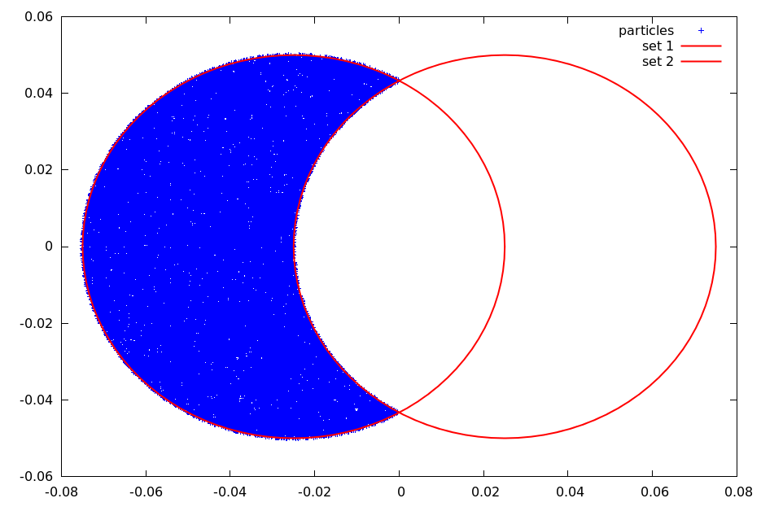
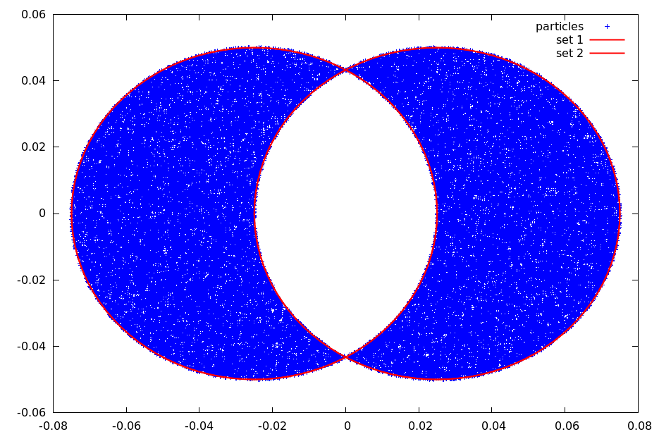
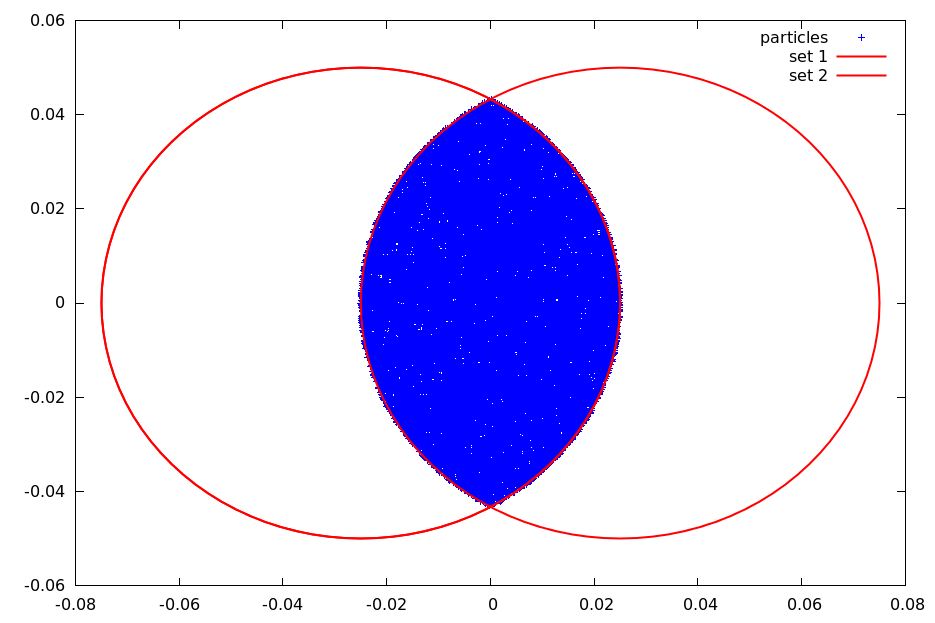
The expression language supports the following constants and functions:
| Constants and functions | Constants and functions | Constants and functions | Constants and functions |
|---|---|---|---|
e |
pi |
abs(x) |
acos(x) |
acosh(x) |
asin(x) |
asinh(x) |
atan(x) |
atanh(x) |
cbrt(x) |
ceil(x) |
cos(x) |
cosh(x) |
deg2rad(x) |
erf(x) |
erfc(x) |
exp(x) |
exp2(x) |
floor(x) |
isinf(x) |
isnan(x) |
log(x) |
log2(x) |
log10(x) |
rad2deg(x) |
round(x) |
sgn(x) |
sin(x) |
sinh(x) |
sqrt(x) |
tan(x) |
tanh(x) |
tgamma(x) |
atan2(y,x) |
max(x,y) |
min(x,y) |
pow(x,n) |
A simple elliptic collimator can be described by:
ellipse(0.04, 0.03)A regular pepper-pot with rectangular holes can be described by:
repeat(
repeat(
translate(
rotate(
rectangle(
0.002,
0.002
),
0.78539
),
-0.028,
-0.028
),
16,
0.004,
0.0
),
16,
0.0,
0.004
)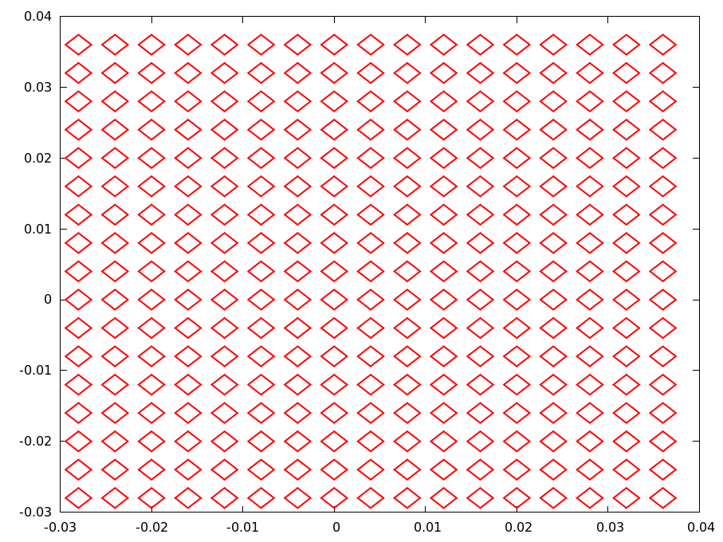
In FLEXIBLECOLLIMATOR, the hole description can be supplied directly through DESCRIPTION or through an external file specified by FNAME. The external file form is the one that allows comments and line breaks.
10.14.2 OPAL-cycl mode
Only CCOLLIMATOR is available in OPAL-cycl. It is a radial rectangular collimator that may absorb or scatter particles using the particle-matter interaction module.
XSTART,XEND,YSTART,YEND-
start and end points of the collimator edge in
mm. ZSTART,ZEND-
vertical bounds in
mm. WIDTH-
collimator width in
mm.
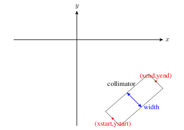
CCOLLIMATOR geometry.
Example:
REAL y1=-0.0;
REAL y2=0.0;
REAL y3=200.0;
REAL y4=205.0;
REAL x1=-215.0;
REAL x2=-220.0;
REAL x3=0.0;
REAL x4=0.0;
cmphys: PARTICLEMATTERINTERACTION, TYPE=SCATTERING, MATERIAL=COPPER;
cma1: CCOLLIMATOR, XSTART=x1, XEND=x2, YSTART=y1, YEND=y2,
ZSTART=2, ZEND=100, WIDTH=10.0, PARTICLEMATTERINTERACTION=cmphys;
cma2: CCOLLIMATOR, XSTART=x3, XEND=x4, YSTART=y3, YEND=y4,
ZSTART=2, ZEND=100, WIDTH=10.0, PARTICLEMATTERINTERACTION=cmphys;10.15 Correctors
Three types of correctors are available:
HKICKER: horizontal correctorVKICKER: vertical correctorKICKER: combined horizontal and vertical corrector
They are defined as:
label: HKICKER, TYPE=string, APERTURE=real-vector,
L=real, KICK=real;
label: VKICKER, TYPE=string, APERTURE=real-vector,
L=real, KICK=real;
label: KICKER, TYPE=string, APERTURE=real-vector,
L=real, HKICK=real, VKICK=real;Attributes:
KICK-
kick angle in
radforHKICKERorVKICKER. HKICK,VKICK-
horizontal and vertical kick angles for
KICKER. DESIGNENERGY-
if set, fixes the magnetic field magnitude using the given design energy in
MeVand the requested kick angle.
A positive kick increases \(p_x\) or \(p_y\) respectively.
Examples:
HK1: HKICKER, KICK=0.001;
VK3: VKICKER, KICK=0.0005;
KHV: KICKER, HKICK=0.001, VKICK=0.0005;Correctors do not change the reference trajectory. Otherwise they are implemented like RBEND with E1 = 0 and without fringe fields.
10.16 Bending Magnets
Legacy OPAL supports four bend families:
RBENDfor rectangular bends in OPAL-TRBEND3Dfor rectangular bends with field-map support in OPAL-TSBENDfor sector bends in OPAL-TSBEND3Dfor 3D field-map bends in OPAL-cycl
RBEND and SBEND share the same basic dipole semantics but differ in their reference geometry. RBEND has parallel pole faces and an exit angle fixed by ANGLE - E1; SBEND uses a sector reference arc and supports independent entrance and exit edge angles.
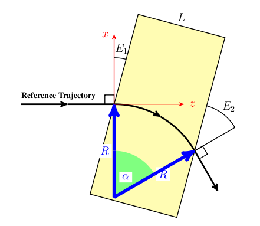
10.16.1 RBEND
Key attributes are:
L: physical magnet lengthGAP: full vertical gapHAPERT: non-bend-plane apertureANGLE: bend angle inradK0,K0S: normal and skew dipole field amplitudes inTE1: entrance edge angleDESIGNENERGY: reference-particle energy inMeVFMAPFN: fringe-field map, typically1DProfile1
If ANGLE is set, it overrides K0 and OPAL adjusts the field strength to bend the design particle through the requested angle.
10.16.2 RBEND3D
RBEND3D keeps the rectangular bend geometry but uses explicit field-map support for the field model. The input attributes follow the same geometric meaning as RBEND, and the entrance/exit pole-face interpretation stays the same.
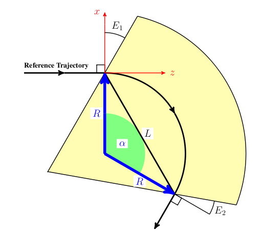
10.16.3 SBEND
SBEND is the sector-bend version. The main difference is the interpretation of L: it is the chord length of the bend reference arc, \[
L = 2 R \sin(\alpha/2)
\] and the element has both E1 and E2 as independent edge angles. Very large bend angles are possible, but once the entrance and exit fringe regions begin to overlap, the approximation becomes unreliable.
10.16.4 Bend setup rules in OPAL-T
The original manual emphasizes the following practical points:
- Internally OPAL-T treats all bends as positive bends in the local reference frame and then uses
ROTATIONto orient them in the laboratory transverse plane. - If
ANGLEis nonzero,K0andK0Sare ignored. - When
ANGLEis used to define the bend strength, the actual beam bend still depends on whether the bunch energy matchesDESIGNENERGY. - The hard-edge geometry defines the ideal reference trajectory, while the
FMAPFNfield map defines the soft-edge magnet seen by tracked particles. - If the default field map
1DPROFILE1-DEFAULTis used, OPAL shifts the fringe-field origins so that the effective length of the soft-edge magnet matches the ideal hard-edge reference bend.
10.16.5 RBEND and SBEND examples
A simple RBEND driven by ANGLE and the default fringe-field map is:
Bend: RBEND, ANGLE = 30.0 * Pi / 180.0,
FMAPFN = "1DPROFILE1-DEFAULT",
ELEMEDGE = 0.25,
DESIGNENERGY = 10.0E6,
L = 0.5, GAP = 0.02;For an electron design beam this produces a 30 degree positive bend, a 1 m reference radius, and a field amplitude of about -0.0350195 T. The important part of the diagnostic output is the final fringe-field integration report, which tells the user the actual bend angle of the reference particle through the soft-edge magnet.
The same bend can be defined through K0 instead of ANGLE:
Bend: RBEND, K0 = -0.0350195,
FMAPFN = "1DPROFILE1-DEFAULT",
ELEMEDGE = 0.25,
DESIGNENERGY = 10.0E6,
L = 0.5, GAP = 0.02;To numerical precision this reproduces the same geometry and field.
To bend in the opposite direction, the legacy manual gives four equivalent patterns:
Bend: RBEND, ANGLE = -30.0 * Pi / 180.0,
FMAPFN = "1DPROFILE1-DEFAULT",
ELEMEDGE = 0.25,
DESIGNENERGY = 10.0E6,
L = 0.5, GAP = 0.02;
Bend: RBEND, ANGLE = 30.0 * Pi / 180.0,
FMAPFN = "1DPROFILE1-DEFAULT",
ELEMEDGE = 0.25,
DESIGNENERGY = 10.0E6,
L = 0.5, GAP = 0.02,
ROTATION = Pi;
Bend: RBEND, K0 = 0.0350195,
FMAPFN = "1DPROFILE1-DEFAULT",
ELEMEDGE = 0.25,
DESIGNENERGY = 10.0E6,
L = 0.5, GAP = 0.02;
Bend: RBEND, K0 = -0.0350195,
FMAPFN = "1DPROFILE1-DEFAULT",
ELEMEDGE = 0.25,
DESIGNENERGY = 10.0E6,
L = 0.5, GAP = 0.02,
ROTATION = Pi;The recommended style is to define the bend in the positive reference orientation and then use ROTATION to place it elsewhere in the transverse plane.
A representative four-dipole chicane setup is:
Bend1: RBEND, ANGLE = 20.0 * Pi / 180.0,
E1 = 0.0,
FMAPFN = "1DPROFILE1-DEFAULT",
ELEMEDGE = 0.25,
DESIGNENERGY = 10.0E6,
L = 0.25,
GAP = 0.02,
ROTATION = Pi;
Bend2: RBEND, ANGLE = 20.0 * Pi / 180.0,
E1 = 20.0 * Pi / 180.0,
FMAPFN = "1DPROFILE1-DEFAULT",
ELEMEDGE = 1.0,
DESIGNENERGY = 10.0E6,
L = 0.25,
GAP = 0.02,
ROTATION = 0.0;
Bend3: RBEND, ANGLE = 20.0 * Pi / 180.0,
E1 = 0.0,
FMAPFN = "1DPROFILE1-DEFAULT",
ELEMEDGE = 1.5,
DESIGNENERGY = 10.0E6,
L = 0.25,
GAP = 0.02,
ROTATION = 0.0;
Bend4: RBEND, ANGLE = 20.0 * Pi / 180.0,
E1 = 20.0 * Pi / 180.0,
FMAPFN = "1DPROFILE1-DEFAULT",
ELEMEDGE = 2.25,
DESIGNENERGY = 10.0E6,
L = 0.25,
GAP = 0.02,
ROTATION = Pi;SBEND can be used in the same role once L, E1, and E2 are interpreted using the sector-bend geometry.
10.16.6 Custom 1DProfile1 bend maps
The source manual distinguishes two 1DProfile1 usage modes:
- the map defines both the fringe fields and the magnet length,
- the map defines only the fringe fields and the element
Ldefines the body length.
In the first mode, a custom map can define an SBEND without supplying L in order to preserve the exit fringe placement:
1DProfile1 1 1 2.0
-10.0 0.0 10.0 1
15.0 25.0 35.0 1
0.00000E+00
2.00000E+00
0.00000E+00
2.00000E+00Bend: SBEND, ANGLE = 60.0 * Pi / 180.0,
E1 = -10.0 * Pi / 180.0,
E2 = 20.0 * Pi / 180.0,
FMAPFN = "TEST-MAP.T7",
ELEMEDGE = 0.25,
DESIGNENERGY = 10.0E6,
GAP = 0.02;In the second mode, the field map contains only the entrance and exit fringe profiles and the magnet body is set by L:
1DProfile1 1 1 2.0
-10.0 0.0 10.0 1
-10.0 0.0 10.0 1
0.00000E+00
2.00000E+00
0.00000E+00
2.00000E+00Bend: SBEND, ANGLE = 60.0 * Pi / 180.0,
E1 = -10.0 * Pi / 180.0,
E2 = 20.0 * Pi / 180.0,
FMAPFN = "TEST-MAP.T7",
ELEMEDGE = 0.25,
DESIGNENERGY = 10.0E6,
L = 0.25,
GAP = 0.02;With ANGLE, OPAL adjusts the field amplitude so that the reference particle is bent by the requested amount after the fringe fields are included. With K0, that compensation is not automatic:
Bend: SBEND, K0 = -0.1400778,
E1 = -10.0 * Pi / 180.0,
E2 = 20.0 * Pi / 180.0,
FMAPFN = "TEST-MAP.T7",
ELEMEDGE = 0.25,
DESIGNENERGY = 10.0E6,
L = 0.25,
GAP = 0.02;In the original example this produces a small bend mismatch because the soft-edge effective length no longer matches the ideal hard-edge reference magnet. The manual then corrects this by moving the entrance and exit Enge origins outward by 0.03026 mm:
1DProfile1 1 1 2.0
-10.0 -0.03026 10.0 1
-10.0 0.03026 10.0 1
0.00000E+00
2.00000E+00
0.00000E+00
2.00000E+00This increases the effective magnet length until the final tracked bend of the reference particle matches the desired 60 degree design bend again.
10.16.7 Bend fields from 1DProfile1
For RBEND and SBEND, OPAL-T divides the field into three regions:
- entrance fringe field
- central field region
- exit fringe field
The fringe regions are modeled from the 1DProfile1 Enge functions associated with FMAPFN.
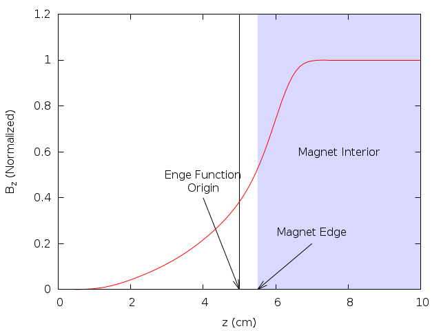
The Enge function is \[
F(z) = \frac{1}{1 + e^{\sum_{n=0}^{N_{\mathrm{order}}} c_n (z/D)^n}}
\] where D is the full magnet gap, N_order is the Enge order, and z is the perpendicular distance from the chosen fringe-field origin to the magnet face.
For a positive bend OPAL-T works with:
B_0: dipole field amplitude,R: bend radius,n = -(R/B_y)(\partial B_y/\partial x): field index set fromK1,F(\Delta_z): the entrance, central, or exit Enge profile depending on the particle position.
The transverse-local coordinates are:
y: vertical offset from the magnet mid-plane,\Delta_x: perpendicular distance from the reference trajectory in the bend plane,\Delta_z: perpendicular distance from the entrance or exit fringe-field origin.
Starting from \[
\nabla \cdot \vec{B} = 0,
\qquad
\nabla \times \vec{B} = 0,
\] and defining \[
F' = \frac{dF}{dz},
\qquad
F'' = \frac{d^2F}{dz^2},
\qquad
F''' = \frac{d^3F}{dz^3},
\] one may write the exact off-axis field in terms of \[
\kappa(\Delta_z) = \sqrt{\frac{n^2}{R^2} + \frac{F''(\Delta_z)}{F(\Delta_z)}}.
\] Then \[
\begin{aligned}
B_x(\Delta_x,y,\Delta_z) &= -B_0 \frac{n}{R} e^{-n\Delta_x/R}
\frac{F(\Delta_z)}{\kappa(\Delta_z)} \sin\!\bigl(\kappa(\Delta_z)y\bigr), \\\\
B_y(\Delta_x,y,\Delta_z) &= B_0 e^{-n\Delta_x/R}
\cos\!\bigl(\kappa(\Delta_z)y\bigr) F(\Delta_z), \\\\
B_z(\Delta_x,y,\Delta_z) &= B_0 e^{-n\Delta_x/R}
\Biggl[
\frac{F'\!(\Delta_z)}{\kappa(\Delta_z)}\sin\!\bigl(\kappa(\Delta_z)y\bigr)
- \frac{1}{2\kappa(\Delta_z)}
\left(F'''\!(\Delta_z) - \frac{F'\!(\Delta_z)F''\!(\Delta_z)}{F(\Delta_z)}\right)
\left(
\frac{\sin\!\bigl(\kappa(\Delta_z)y\bigr)}{\kappa(\Delta_z)^2}
- y\frac{\cos\!\bigl(\kappa(\Delta_z)y\bigr)}{\kappa(\Delta_z)}
\right)
\Biggr].
\end{aligned}
\] For tracking, OPAL-T uses the small-y expansion up to O(y^2).
In the fringe regions: \[ \begin{aligned} B_x &\approx -B_0 \frac{n}{R} e^{-n\Delta_x/R} y, \\\\ B_y &\approx B_0 e^{-n\Delta_x/R} \left[F(\Delta_z) - \left(\frac{n^2}{R^2}F(\Delta_z) + F''\!(\Delta_z)\right)\frac{y^2}{2}\right], \\\\ B_z &\approx B_0 e^{-n\Delta_x/R} y F'\!(\Delta_z). \end{aligned} \] In the central region: \[ \begin{aligned} B_x &\approx -B_0 \frac{n}{R} e^{-n\Delta_x/R} y, \\\\ B_y &\approx B_0 e^{-n\Delta_x/R}\left(1 - \frac{n^2}{R^2}\frac{y^2}{2}\right), \\\\ B_z &\approx 0. \end{aligned} \] These are the expressions OPAL-T uses internally after it determines whether a particle is in the entrance fringe, body, or exit fringe region.
10.16.8 Default bend field map
When FMAPFN="1DPROFILE1-DEFAULT", OPAL uses built-in Enge coefficients for both the entrance and exit fringe regions. The default map corresponds to a 2 cm gap, which may be overridden by the element GAP attribute.
The coefficients are: \[ \begin{aligned} c_0 &= 0.478959, & c_1 &= 1.911289, & c_2 &= -1.185953, \\ c_3 &= 1.630554, & c_4 &= -1.082657, & c_5 &= 0.318111. \end{aligned} \]
The equivalent explicit 1DProfile1 map is:
1DProfile1 5 5 2.0
-10.0 0.0 10.0 1
-10.0 0.0 10.0 1
0.478959
1.911289
-1.185953
1.630554
-1.082657
0.318111
0.478959
1.911289
-1.185953
1.630554
-1.082657
0.31811110.16.9 SBEND3D
SBEND3D is the OPAL-cycl field-map bend. It is defined by:
label: SBEND3D, FMAPFN=string, LENGTH_UNITS=real, FIELD_UNITS=real;FMAPFN- 3D magnetic field-map file.
LENGTH_UNITS- scaling for the map coordinates.
FIELD_UNITS- scaling for the field values.
The field map is stored in Cartesian field components but arranged on a cylindrical (r, z, \theta) grid. The expected column ordering is \((x, z, y, B_x, B_z, B_y)\). SBEND3D assumes dipole symmetry across the median plane.
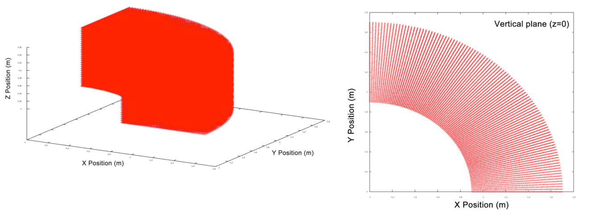
SBEND3D.
Example:
Dipole: SBEND3D, FMAPFN="90degree_Dipole_Magnet.out",
LENGTH_UNITS=1000.0, FIELD_UNITS=-10.0;10.17 Analytic sector and rectangular bends
The current OPALX-native analytic SBEND and RBEND implementation is a field-based bend model with explicit body placement, explicit field-support extent, and first-order fringe optics. The implementation does not replace bend tracking by transfer matrices. Instead, the reference particle and the bunch are integrated through the magnetic field that is evaluated in the local bend chart.
10.17.1 Body extent and field-support extent
The nominal body extent is the placed hardware interval \[ z \in [0, L], \] where (L) is the body length used for placement, body ports, and geometry export.
The field-support extent may extend beyond the body through entry and exit fringe regions, \[
z \in [-\ell_{\mathrm{entry}},\, L + \ell_{\mathrm{exit}}],
\] with \[
\ell_{\mathrm{entry}} = \frac{h_{\mathrm{gap}} F_{\mathrm{int}}}{|\cos E_1|},
\qquad
\ell_{\mathrm{exit}} = \frac{h_{\mathrm{gap}} F_{\mathrm{int}}}{|\cos E_2|}.
\] Here (h_{}) is the half gap (HGAP), (F_{}) is the fringe integral (FINT), and (E_1), (E_2) are the entrance and exit pole-face angles. If HGAP is not given, OPALX uses the fallback \[
h_{\mathrm{gap}} = \frac{\mathrm{GAP}}{2}.
\]
The body extent drives placement and visualization. The field-support extent drives field evaluation, active-set occupancy, and timestep sanity checks.
10.17.2 Effective field length and bend normalization
The implemented fringe-support model uses a linear hard-edge ramp at both faces. The effective field length is therefore defined as \[ L_{\mathrm{eff}} = L_{\mathrm{ref}} + \frac{\ell_{\mathrm{entry}} + \ell_{\mathrm{exit}}}{2}, \] where (L_{}) is the body length measured along the design reference path.
For SBEND, the design reference-path body length equals the sector-bend body length, \[
L_{\mathrm{ref}}^{\mathrm{SBEND}} = L.
\] For RBEND, the design reference-path body length is the curved reference-path length between the rotated entrance and exit faces, \[
L_{\mathrm{ref}}^{\mathrm{RBEND}} = L_{\mathrm{arc}},
\] not the straight body chord.
ANGLE is the primary geometric input. The analytic dipole coefficient is normalized against the effective field length, \[
k_0 = \frac{\theta}{L_{\mathrm{eff}}},
\] with total bend angle (). K0 is treated only as a secondary consistency-check quantity.
10.17.3 Longitudinal field profile
The body field is multiplied by a longitudinal scale function ((z)) defined by \[ \lambda(z) = \begin{cases} 0, & z < -\ell_{\mathrm{entry}}, \\ \dfrac{z + \ell_{\mathrm{entry}}}{\ell_{\mathrm{entry}}}, & -\ell_{\mathrm{entry}} \le z \le 0, \\ 1, & 0 \le z \le L, \\ \dfrac{L + \ell_{\mathrm{exit}} - z}{\ell_{\mathrm{exit}}}, & L \le z \le L + \ell_{\mathrm{exit}}, \\ 0, & z > L + \ell_{\mathrm{exit}}. \end{cases} \]
This is a field-support model, not a body-length remapping. Particles begin to see the bend field at FIELD BEGIN, not necessarily at ENTRY EDGE.
10.17.4 First-order fringe optics
In addition to the longitudinal field ramp, the implementation includes a first-order edge-focusing model. With signed curvature \[ h = \frac{\theta}{L_{\mathrm{eff}}}, \] the horizontal hard-edge relation is \[ x'_{\mathrm{out}} = x'_{\mathrm{in}} + h \tan(E)\,x. \]
The vertical edge focusing includes the standard fringe correction \[ \psi = h\,h_{\mathrm{gap}}\,F_{\mathrm{int}} \frac{1 + \sin^2(E)}{\cos(E)}, \] so the implemented vertical law is \[ y'_{\mathrm{out}} = y'_{\mathrm{in}} - h \tan(E - \psi)\,y. \]
In OPALX these optics effects are realized through an equivalent distributed fringe-field correction across the entry and exit support regions. The model is therefore field-based and first-order accurate in the edge optics, but it is not yet a full three-dimensional fringe-field model.
10.17.5 Sliced Bend Model
The current analytic SBEND and RBEND field model is already expressed in the local bend chart and is used consistently for the reference particle. The remaining many-particle tracking problem is geometric rather than magnetic: a quadrupole can be tracked in one rigid local frame, while a bend requires a local chart whose tangent direction rotates along the design path. The planned many-particle bend tracker therefore replaces a single rigid bend frame by a set of short rigid tracking slices.
The guiding idea is to make bend tracking follow the same Kokkos execution pattern as a straight multipole:
- transform the particle container into one local frame,
- evaluate the field locally with a Kokkos kernel,
- transform back.
Slice geometry
Let (s) denote the longitudinal coordinate along the bend design reference path. The reference path is split into (N) slices with intervals \[ I_j = [s_j, s_{j+1}], \qquad j = 0, \dots, N-1, \] and slice length \[ \Delta s_j = s_{j+1} - s_j. \]
Each slice is represented by a rigid local frame attached at the slice center. Within a slice, particle coordinates are approximated in a straight local tangent chart; the approximation becomes exact in the limit of sufficiently small slice size.
Body, entry-fringe, and exit-fringe slices
The slice construction must respect the field-support extent rather than only the placed body extent. In the local bend chart the three tracking regions are the entry fringe, the body, and the exit fringe. The body slices carry the full field scale, while the fringe slices carry the longitudinal ramp.
Pole-face rotations and slice support lengths
The pole-face angles (E_1) and (E_2) do not rotate the slice frames. Each slice frame remains tangent to the design path. The pole-face angles only determine:
- how far the entry and exit fringe regions extend in (s),
- what first-order edge focusing strength is distributed over those fringe slices.
10.17.6 Code-to-code and analytic comparisons
The current implementation has been benchmarked against Bmad for:
- a proton
SBENDwith kinetic energy590 MeV, body length1 m, and bend angle45^\circ - an electron
RBENDwith kinetic energy1 GeV, rectangular body length1 m, and bend angle45^\circ
For the SBEND benchmark, the OPALX trajectory has also been compared with the analytic circular-orbit solution.

SBEND and RBEND benchmarks against Bmad. The SBEND panel also includes the analytic circular-orbit solution. The right axis in each panel shows (x = x_{} - x_{}).
The timestep study for the simple SBEND case is shown below.
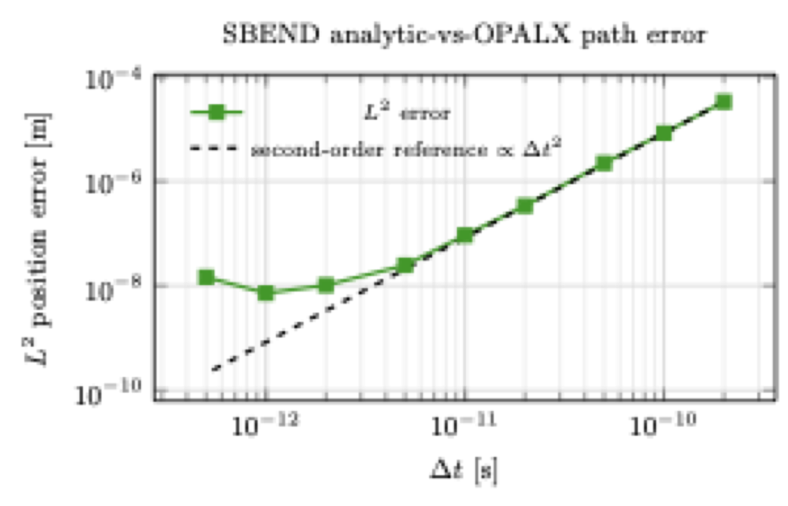
SBEND timestep study using the path-wise (L^2) error between OPALX and the analytic circular-orbit solution. The dashed line shows the theoretical second-order reference decay.
10.18 Multipole family
The OPALX MULTIPOLE implementation is the common straight-magnet path for normal and skew magnetic multipole expansions. The present QUADRUPOLE front-end is a convenience wrapper on top of that common path. A dedicated SEXTUPOLE parser-side wrapper is not present in this checkout; sextupole content is therefore expressed through the generic MULTIPOLE coefficient arrays.
10.18.1 Field expansion and conventions
The underlying magnetic field class BMultipoleField uses the complex transverse expansion \[
B_y + i B_x = \sum_{m=0}^{N-1} (B_m + i A_m) (x + i y)^m,
\] where:
- (m = 0) is the dipole term
- (m = 1) is the quadrupole term
- (m = 2) is the sextupole term
- (B_m) are normal coefficients
- (A_m) are skew coefficients
For the first three nontrivial components, the transverse magnetic field is:
\[ \text{normal quadrupole:}\qquad B_x = B_1\,y,\qquad B_y = B_1\,x, \]
\[ \text{skew quadrupole:}\qquad B_x = -A_1\,x,\qquad B_y = A_1\,y, \]
\[ \text{normal sextupole:}\qquad B_x = 2 B_2\,x y,\qquad B_y = B_2 (x^2 - y^2), \]
\[ \text{skew sextupole:}\qquad B_x = -A_2 (x^2 - y^2),\qquad B_y = 2 A_2\,x y. \]
10.18.2 MULTIPOLE
The parser-side element OpalMultipole accepts the coefficient arrays:
KN: normal normalized strengthsDKN: normal strength errorsKS: skew normalized strengthsDKS: skew strength errors
The element semantics are:
- if
L != 0, the strengths are interpreted per unit length - if
L == 0, they are interpreted as integrated strengths
Internally the generic mapping is:
\[ \texttt{KN}[0] \to \text{dipole},\qquad \texttt{KN}[1] \to \text{quadrupole},\qquad \texttt{KN}[2] \to \text{sextupole}, \]
and likewise for KS.
10.18.3 QUADRUPOLE
The parser-side OpalQuadrupole is not a separate runtime field model. It is a convenience wrapper that instantiates the same MultipoleRep used by MULTIPOLE, but exposes scalar quadrupole attributes instead of full coefficient arrays:
K1,DK1: normal quadrupole strength and errorK1S,DK1S: skew quadrupole strength and error
The implementation writes those values into the multipole representation as:
\[ \texttt{KN} = \{0, K_1\},\qquad \texttt{KS} = \{0, K_{1s}\}. \]
10.18.4 SEXTUPOLE
There is currently no dedicated OpalSextupole front-end class in this checkout. The sextupole physics is nevertheless available through the generic MULTIPOLE representation by populating the order-2 coefficients:
\[ \texttt{KN} = \{0, 0, K_2\},\qquad \texttt{KS} = \{0, 0, K_{2s}\}. \]
That means the sextupole is currently a configuration of MULTIPOLE, not a distinct parser-side wrapper parallel to QUADRUPOLE.
10.18.5 Runtime geometry and current implementation status
The runtime representation MultipoleRep inherits from Multipole and owns:
- a
StraightGeometry - a
BMultipoleField
So the current multipole family described here is a straight-element model with field support over \[ z \in [0, L]. \]
One important current detail is that the device-side computeField() kernel still contains explicit special cases only for dipole and quadrupole, while the host-side implementation includes sextupole and higher orders as well. That means:
- the interface is generic up to higher order
- the host/orbit-threader path includes sextupole formulas
- the current device kernel is still more limited than the abstract interface
10.19 Cyclotron
label: CYCLOTRON, TYPE=string, CYHARMON=int,
PHIINIT=real, PRINIT=real, RINIT=real,
SYMMETRY=real, RFFREQ=real, FMAPFN=string;The CYCLOTRON object defines the main machine field map, cyclotron symmetry, reference-particle initial conditions, and machine boundaries for cyclotron tracking.
Key attributes are:
TYPE-
magnetic-field-map format, for example
RING,CARBONCYCL,CYCIAE,AVFEQ,FFA, orBANDRF. CYHARMON,RFFREQ- RF harmonic number and RF frequency.
FMAPFN- magnetic field-map file.
RINIT,PHIINIT,ZINIT,PRINIT,PZINIT- initial reference-particle position and momentum.
SYMMETRY- rotational symmetry fold of the machine.
MINR,MAXR,MINZ,MAXZ- machine boundaries used for particle termination.
TRIMCOIL- optional list of trim-coil models applied on top of the main field map.
For TYPE=BANDRF, additional electric-field map arrays can be supplied through RFMAPFN, RFPHI, RFFREQ, ESCALE, and SUPERPOSE.
Example:
ring: CYCLOTRON, TYPE=RING, CYHARMON=6, PHIINIT=0.0,
PRINIT=-0.000240, RINIT=2131.4, SYMMETRY=8.0,
RFFREQ=50.650, FMAPFN="s03av.nar",
MAXZ=10, MINZ=-10, MINR=0, MAXR=2500;10.20 FFA Magnet
OPAL provides two analytical FFA element families:
SCALINGFFAMAGNETfor radially scaling sector magnetsVERTICALFFAMAGNETfor vertically scaling magnets
10.20.1 Scaling FFA Magnet
The scaling FFA model is a fully scaling field model including scaling fringe fields. In cylindrical-polar notation it has the form \[ B_\phi = \sum_{n=0} f_{2n+1}(\psi)\, h(r) \left(\frac{z}{r}\right)^{2n+1}, \] \[ B_r = \sum_{n=0} \left[ \frac{k-2n}{2n+1} f_{2n} - \tan(\delta) f_{2n+1} \right] h(r) \left(\frac{z}{r}\right)^{2n+1}, \] \[ B_z = \sum_{n=0} f_{2n}(\psi)\, h(r) \left(\frac{z}{r}\right)^{2n}. \] Here \(r\) and \(z\) are cylindrical coordinates and \[ \psi = \phi - \tan(\delta)\ln(r/r_0) \] is the azimuth in the spiral coordinate system. \(r_0\), \(\delta\), \(k\), and \(B_0\) define the radial field scaling.
Important attributes are:
B0: nominal dipole field atR0inTR0: radial scale inmFIELD_INDEX: scaling field indexTAN_DELTA: tangent of the spiral angleMAX_Y_POWER: highest retained vertical power in the expansionEND_LENGTH,CENTRE_LENGTH: fringe and body lengths inmHEIGHT: full vertical apertureRADIAL_NEG_EXTENT,RADIAL_POS_EXTENT: radial tracking limits aboutR0MAGNET_START,MAGNET_END: placement of the effective magnet body within the elementAZIMUTHAL_EXTENT: azimuthal support of the field model
10.20.2 Vertical FFA Magnet
VERTICALFFAMAGNET is also a fully scaling model including scaling fringe fields, but it uses a vertically scaling exponential field law, \[
B_x = \sum_n B_0 e^{mz}\,\frac{1}{m}\,\partial_x f_n\, y^n,
\] \[
B_y = \sum_n B_0 e^{mz}\,\frac{n+1}{m}\, f_{n+1}\, y^n,
\] \[
B_z = \sum_n B_0 e^{mz} f_n y^n.
\]
Important attributes are:
B0: nominal dipole field atz = 0FIELD_INDEX: vertical scaling indexminm^-1MAX_Y_POWER: maximum retained power inyEND_LENGTH,CENTRE_LENGTH: fringe and body lengthsWIDTH: full horizontal apertureHEIGHT_NEG_EXTENT,HEIGHT_POS_EXTENT: lower and upper vertical limitsBB_LENGTH: bounding-box length used for placement of the next element
Both FFA families are cyclotron-side restricted features intended for specialized fixed-field ring studies.
10.21 Ring Definition
label: RINGDEFINITION,
RFFREQ=real, HARMONIC_NUMBER=real, IS_CLOSED=string, SYMMETRY=int,
LAT_RINIT=real, LAT_PHIINIT=real, LAT_THETAINIT=real,
BEAM_PHIINIT=real, BEAM_THETAINIT=real, BEAM_PRINIT=real, BEAM_RINIT=real;A RINGDEFINITION object stores the global properties of a generalized ring. It describes both machine-wide quantities such as harmonic number and the initial relationship between lattice placement and the reference trajectory.
The element is intended to be used together with SBEND3D, local offsets, and VARIABLE_RF_CAVITY elements to assemble a complete ring.
RFFREQ-
nominal RF frequency in
MHz. HARMONIC_NUMBER- harmonic number, i.e. the number of bunches in a full revolution.
SYMMETRY- azimuthal repetition count of the ring cell.
IS_CLOSED-
set to
FALSEto disable ring-closure checking. LAT_RINIT,LAT_PHIINIT,LAT_THETAINIT- initial radius, azimuth, and tangent-angle definition for placement of the first lattice element.
BEAM_RINIT,BEAM_PHIINIT,BEAM_THETAINIT,BEAM_PRINIT- initial reference-orbit state.
MIN_R,MAX_R- optional radial tracking limits; if either is set, the other should be set as well.
Example:
ringdef: RINGDEFINITION, HARMONIC_NUMBER=6, LAT_RINIT=2350.0,
LAT_PHIINIT=0.0, LAT_THETAINIT=0.0, BEAM_PHIINIT=0.0,
BEAM_PRINIT=0.0, BEAM_RINIT=2266.0, SYMMETRY=4.0, RFFREQ=0.2;10.21.1 Local Cartesian Offset
LOCAL_CARTESIAN_OFFSET places the next element at an arbitrary position in the coordinate system of the preceding element. It is mainly used to create drift gaps and overlapping placements.
END_POSITION_X,END_POSITION_Y: displacement of the next element startEND_NORMAL_X,END_NORMAL_Y: outgoing element normal in the preceding frame
10.21.2 Local Cylindrical Offset
LOCAL_CYLINDRICAL_OFFSET performs the same task in cylindrical coordinates.
THETA_IN: angle from the previous element to the displacement vectorTHETA_OUT: angle from the displacement vector to the next elementLENGTH: offset length
10.22 Source
The SOURCE element is an OPAL-T gun-side helper element. Its first purpose is to mark the physical emission location so that the three-dimensional gun region can be placed correctly. Its second purpose is to delete particles that travel backward into the source plane.
TRANSPARENT-
if
FALSE(default), particles impacting the source are deleted; ifTRUE, they may continue through the source.
Hits on the source are written to the element output file configured through OUTFN.
10.23 Variable RF Cavities
VARIABLE_RF_CAVITY extends the hard-edge cavity model by making frequency, amplitude, and phase explicit functions of time:
FREQUENCY_MODEL=string, AMPLITUDE_MODEL=string, PHASE_MODEL=stringThe field is modeled as \[ E(t) = a(t)\,\sin\!\left(2\pi \int_0^t f(\tau)\,d\tau + \phi(t)\right) \] with no field outside the cavity boundary and no transverse dependence in the hard-edge model.
Important geometry attributes are WIDTH, HEIGHT, and L. In OPAL-cycl, variable RF cavities are typically placed through RINGDEFINITION.
10.23.1 Time-dependence models
POLYNOMIAL_TIME_DEPENDENCE-
defines \[
g(t) = p_0 + p_1 t + p_2 t^2 + p_3 t^3,
\] either via
P0..P3or a longerCOEFFICIENTSarray. SPLINE_TIME_DEPENDENCE-
uses tabulated
TIMESandVALUESwithORDER=1or3. SINUSOIDAL_TIME_DEPENDENCE-
sums one or more sine waves from arrays
FREQUENCIES,AMPLITUDES,PHASE_OFFSETS, andDC_OFFSETS.
10.23.2 Soft-edged variable cavities
For soft-edged cavities, VARIABLE_RF_CAVITY_FRINGE_FIELD adds:
CENTRE_LENGTHEND_LENGTHCAVITY_CENTREMAX_ORDER
The intention is to place a full cavity including the central flat-top field region and explicit fringe-field ends. VARIABLE_RF_CAVITY_FRINGE_FIELD is the legacy soft-edge companion of VARIABLE_RF_CAVITY.
Example:
RF_FREQUENCY: POLYNOMIAL_TIME_DEPENDENCE, P0=rf_p0, P1=rf_p1, P2=rf_p2, P3=rf_p3;
RF_AMPLITUDE: POLYNOMIAL_TIME_DEPENDENCE, P0=1.0;
RF_PHASE: POLYNOMIAL_TIME_DEPENDENCE, P0=phi;
HARD_RF_CAVITY: VARIABLE_RF_CAVITY,
PHASE_MODEL="RF_PHASE", AMPLITUDE_MODEL="RF_AMPLITUDE",
FREQUENCY_MODEL="RF_FREQUENCY", L=0.100, HEIGHT=0.200, WIDTH=2.000;
SOFT_RF_CAVITY: VARIABLE_RF_CAVITY_FRINGE_FIELD,
PHASE_MODEL="RF_PHASE", AMPLITUDE_MODEL="RF_AMPLITUDE",
FREQUENCY_MODEL="RF_FREQUENCY", L=0.200, HEIGHT=0.200, WIDTH=2.000,
CENTRE_LENGTH=0.1, END_LENGTH=0.01, CAVITY_CENTRE=0.1, MAX_ORDER=4;10.24 Septum
SEPTUM is a cyclotron-side extraction element. Particles hitting the septum are removed from the bunch and written to the element output file.
Main geometric attributes:
XSTART,XENDYSTART,YENDWIDTH
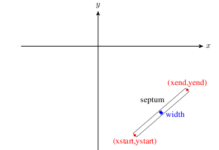
SEPTUM geometry.
Example:
eec2: SEPTUM, XSTART=4100.0, XEND=4300.0,
YSTART=-1200.0, YEND=-150.0, WIDTH=0.05;Lost particles are written to OUTFN.h5 or ASCII when ASCIIDUMP is enabled.
10.25 Probe
PROBE records particles crossing a line-like detector while leaving them in the simulation.
Main attributes:
XSTART,XENDYSTART,YENDSTEP: histogram step size for the associated probe histogram and peak files
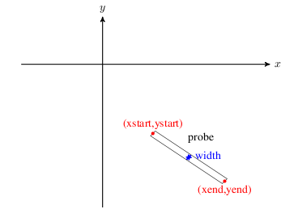
PROBE geometry.
Example:
prob1: PROBE, XSTART=4166.16, XEND=4250.0,
YSTART=-1226.85, YEND=-1241.3;The hit particles are recorded in OUTFN.h5 (or ASCII with ASCIIDUMP). The same crossings are also accumulated into the .hist and .peaks files that mimic measured probe histograms and their derived peak locations.
10.26 Output Plane
OUTPUTPLANE records particles crossing a plane in space. Unlike PROBE, the plane can be defined either by a probe-style segment or by an explicit center and normal.
Two placement styles are available:
PROBE: usesXSTART,XEND,YSTART,YENDCENTRE_NORMAL: usesCENTRE,NORMAL, together with optionalWIDTH,HEIGHT, andRADIUS
Additional controls include:
REFERENCE_ALIGNMENT_PARTICLETOLERANCEALGORITHM = INTERPOLATION | RK4VERBOSE
In CENTRE_NORMAL mode the plane may realign itself on the first crossing of REFERENCE_ALIGNMENT_PARTICLE so that the plane center and normal follow that reference trajectory.
Example:
outplane1: OUTPUTPLANE, PLACEMENT_STYLE=CENTRE_NORMAL,
CENTRE={10, 13.5, 0}, NORMAL={1,0,0},
WIDTH=1.5, HEIGHT=0.8, RADIUS=1,
ALGORITHM=RK4, VERBOSE=1,
REFERENCE_ALIGNMENT_PARTICLE=0, OUTFN="FileName.txt";10.27 Stripper
STRIPPER is the cyclotron extraction element that changes particle charge and mass when a particle hits the stripping foil geometry.
Important attributes are:
XSTART,XEND,YSTART,YENDOPCHARGE: output charge stateOPMASS: output particle massOPYIELD: number of outgoing particles per incoming particleSTOP: ifTRUE, stop the particle after stripping
The geometry matches the PROBE-style line segment. The struck particles are always written to the output file, regardless of STOP. The legacy manual also states explicitly that this element changes charge and mass but does not yet model the full microscopic stripping process.
Example:
prob1: STRIPPER, XSTART=4166.16, XEND=4250.0,
YSTART=-1226.85, YEND=-1241.3,
OPCHARGE=1, OPMASS=PMASS,
OPYIELD=2, STOP=FALSE;10.28 Degrader
DEGRADER is an OPAL-T particle-matter interaction element with an elliptical transverse profile and length L.
Important attributes are:
XSIZE,YSIZE: ellipse axesPARTICLEMATTERINTERACTION: attach scattering and energy-loss modeling
If no particle-matter interaction handler is attached, particles hitting the degrader are simply recorded and deleted.
Example:
DEGPHYS: PARTICLEMATTERINTERACTION, TYPE=SCATTERING, MATERIAL=GRAPHITE;
DEG1: DEGRADER, L=0.15, ELEMEDGE=0.02, PARTICLEMATTERINTERACTION=DEGPHYS;10.29 Vacuum
VACUUM represents interactions with residual gas and, when configured, the associated stripping physics. When an interaction occurs, the particle state at that instant is written out.
In OPAL-cycl, the vacuum region is bounded by the cyclotron-wide MINZ, MAXZ, MINR, and MAXR limits. In OPAL-T it is described by the usual L and ELEMEDGE placement parameters.
Important attributes are:
PRESSURE: average residual-gas pressure inmbarTEMPERATURE: gas temperature inKGAS = H2 | AIRSTOP: whether the interacting particle is deleted immediatelyPARTICLEMATTERINTERACTION
Cyclotron mode additionally supports a pressure map through:
PMAPFN: mid-plane pressure-map filePSCALE: scale factor applied to that map
If PMAPFN is supplied, PRESSURE acts as the default value outside the map extent. For stripping studies, PARTICLEMATTERINTERACTION should usually point to a handler with TYPE=BEAMSTRIPPING.
Example:
bstp_phys: PARTICLEMATTERINTERACTION, TYPE=BEAMSTRIPPING;
vac: VACUUM, PRESSURE=1E-8, TEMPERATURE=300,
GAS=H2, STOP=true, PARTICLEMATTERINTERACTION=bstp_phys;The particles stripped in the residual gas are written to the configured output file regardless of the value of STOP.
10.30 Undulator
UNDULATOR couples the beamline to OPAL’s full-wave FEL solver path. In the legacy implementation the field solve switches from Poisson to a Finite-Difference Time-Domain full-wave model while the bunch traverses the undulator. This path relies on the external MITHRA library.
To use this feature, OPAL must be built with MITHRA support:
- install the MITHRA library,
- set
MITHRA_PREFIXto its installation path, - configure OPAL with
-DENABLE_OPAL_FEL=yes.
When the head of the bunch crosses the undulator start, the solver switches to full-wave and returns to Poisson once the bunch has passed the undulator and its fringe fields.
The effective undulator length is determined by the number of periods and the built-in fringe extent, \[
L = N\lambda + 2\,\mathrm{fringe}, \qquad \mathrm{fringe} = 2\lambda,
\] so there is no separate user-supplied L parameter.
The idealized planar-undulator field is \[ B_x = B_0\cosh(kr)\sin(kz)\cos(\alpha), \] \[ B_y = B_0\cosh(kr)\sin(kz)\sin(\alpha), \] \[ B_z = B_0\sinh(kr)\cos(kz), \] with \(k = 2\pi/\lambda\) and polarization angle \(\alpha\).
Important attributes are:
K: undulator strength parameterLAMBDA: undulator periodNUMPERIODS: number of periodsANGLE: polarization angleMESHLENGTH: computational-domain size in the moving bunch frameMESHRESOLUTION: computational-grid spacingDTBUNCH: particle update timestepTRUNORDER: absorbing-boundary truncation orderTOTALTIME: total full-wave simulation timeFNAME: optional job/output description file for the full-wave solver
Example:
UND: UNDULATOR, ELEMEDGE = 44.0e-2, K = 10.81, LAMBDA = 8.5e-2, NUMPERIODS = 10, ANGLE = PI/2,
MESHLENGTH = { 12e-3, 12e-3, 4e-3 }, MESHRESOLUTION = { 1e-5, 1e-5, 8e-6},
FNAME = "wiggler_sims_July_2020/mithra_output.job";10.31 Beam-Beam Interaction Point
label: BEAMBEAM, ELEMEDGE=real, L=real, VISUALIZE=bool;BEAMBEAM is the OPALX interaction-window element for direct bunch-bunch interaction. As soon as the head of the tracked bunch enters the interaction window, OPALX switches from ordinary beamline tracking to the collision update for that region.
L-
physical length of the interaction window in
m. VISUALIZE- enable ASCII interaction-window visualization and frame dumps.
COPY- reserved for a future mirrored-bunch mode. The keyword is documented in the design sketches but is not implemented in the current code path.
Example of a straight interaction-point element with ASCII visualization:
ip1: BEAMBEAM, ELEMEDGE=44.0, L=0.1, VISUALIZE=TRUE;The legacy OPALX manual text also includes two forward-looking sketches:
- a mirrored-bunch
COPY=TRUEmode in which the second bunch would be created by reflecting the tracked bunch about the interaction point, - a two-source example with explicitly counter-propagating bunches.
These sketches are useful for intended usage, but they remain design-level notes rather than supported input paths in the current implementation.